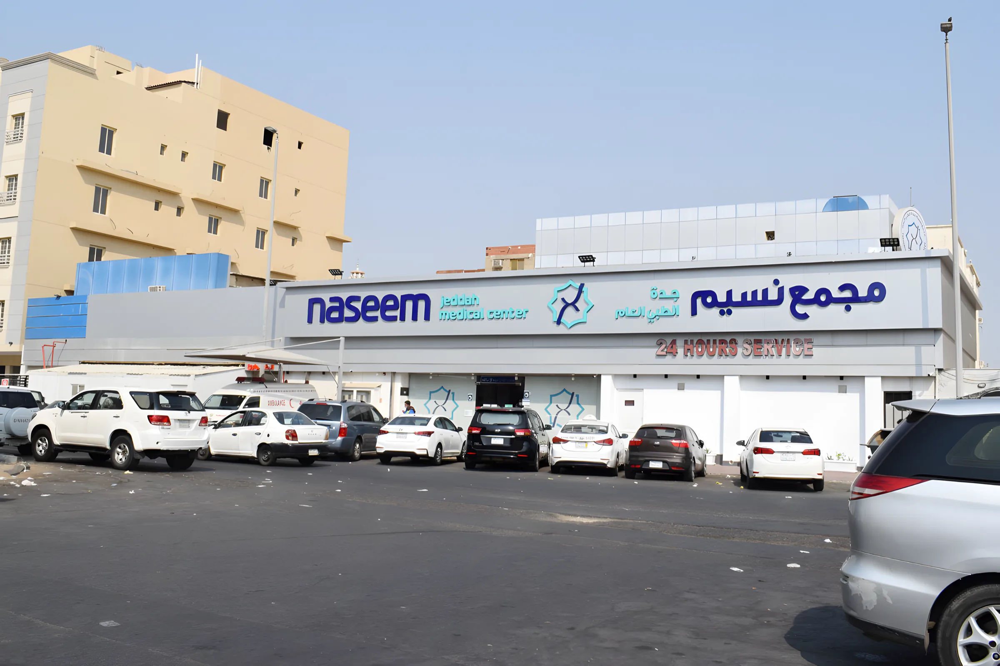

Since 2003in Al Aziziyah
Naseem Jeddah Medical Center was founded in 2003 by Dr Adnan Mohamed Yusuf Salama, to give the neighbourhood a full medical centre close to home. It still stands on Sahar Al Wardi, near Souq Al Manar.

The centre on Sahar Al Wardi today. Photo: Naseem Jeddah Medical Center.
Who runs it
- Dr Adnan Mohamed Yusuf SalamaFounder, 2003
- Dr Mohamed Abdul Aziz RabeehFounder
- Abdul Hadi Abdullah Al SubehiGeneral Manager
“We provide the right mix of cutting edge technology, warmth and compassionate care … in a cost effective way.”
We are mainly an outpatient centre. Patients come for a GP, a specialist, a dentist, a scan or a medical test, and leave the same day with their prescription filled next door.
Treatment can be covered by your health insurance, or you can pay yourself. Our aim, in our own words: to improve the health of every individual by giving better treatment, and to become the most trusted health care facility in the Kingdom.
In the building
From the polyclinic page of our current site.
- Pathology lab, X-ray, panoramic X-ray and ultrasound, run by clinical pathologists and technicians
- Every machine connected to our server, so patients never need to bring their reports
- A nurses' triage room: blood pressure, temperature, pulse, oxygen saturation and weight before the doctor
- A kiosk for follow-up tokens and lab report printouts, to keep the queue at reception short
- Specialists in orthopaedics, paediatrics, ophthalmology, ENT, gynaecology, general surgery, pathology and ultrasonography

Reception and the waiting area. See who's in today